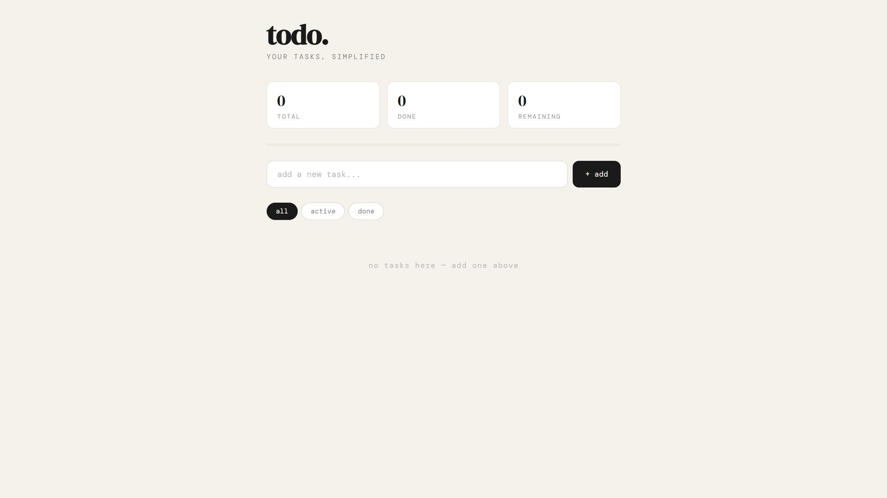

Django Todo API
Python · Django · Django REST Framework · Render

Live Demo
todo-checklist-qpp2.onrender.com
Python
Django
Django REST Framework
PostgreSQL
Render
What It Does
A fully functional REST API for managing todo items — create, read, update, and delete tasks via clean JSON endpoints. Built to learn the Django ecosystem end-to-end, from models and migrations to deployment on Render.
Technical Decisions
- Used Django REST Framework for serializers and class-based views — gets you a browsable API UI out of the box, which made debugging fast.
- Django's ORM and migration system handled the schema — no raw SQL; changes to models generate versioned migration files automatically.
- Swapped SQLite for PostgreSQL via dj-database-url in production, keeping SQLite locally for speed.
- Whitenoise for static file serving without needing a separate CDN or S3 bucket.
- Environment variables for
SECRET_KEYandDEBUGso the same codebase runs locally and in prod without changes. - Deployed via Render with a
build.shscript that handles installs, static collection, and migrations on every deploy.
Problems Solved
- Troubleshot the
todosapp not being detected by migrations — tracked it down to a missing entry inINSTALLED_APPS. - Fixed Windows CRLF line-ending issues in
build.shthat caused the Render deploy to silently fail. - Wired up the URL router correctly so all todo routes live under
/api/and the root app delegates cleanly.
What I'd Do Differently / Next
- Add user authentication so todos are scoped per user, not globally shared.
- Write unit tests for the serializer and views using DRF's test client.
- Add due dates and priority levels to the model, with filtering on the API side.
- Build a simple frontend (React or plain JS) that consumes the API, so it's more demo-able.